Android Development (Native Kotlin)
Спритні Спрайти: Arcade & Puzzle Game
Kotlin
ObjectAnimator
SharedPreferences
Custom UI
60 FPS Optimization
Галерея проєкту
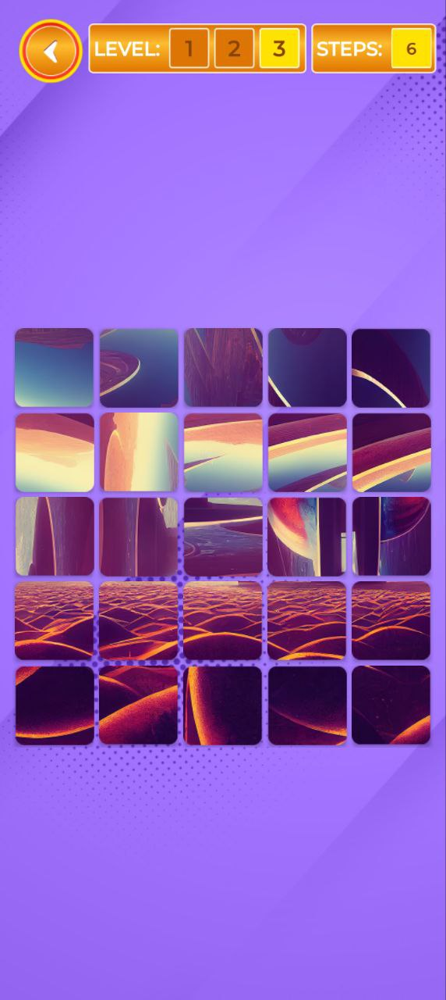
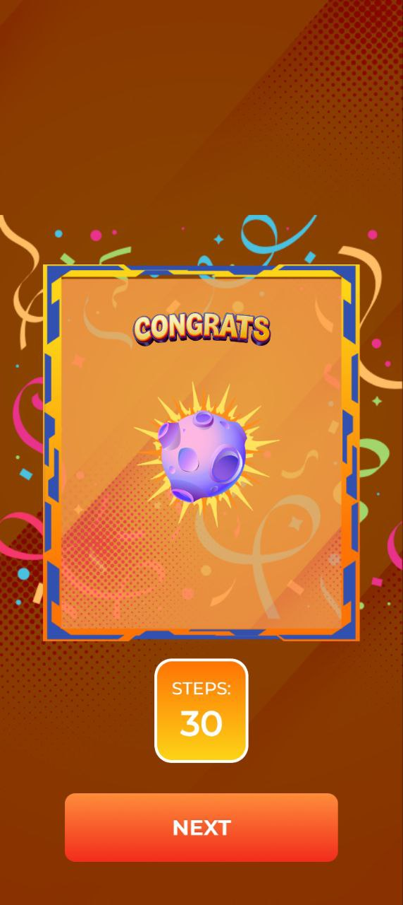
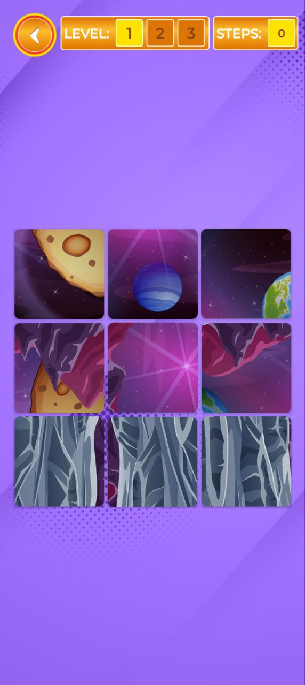
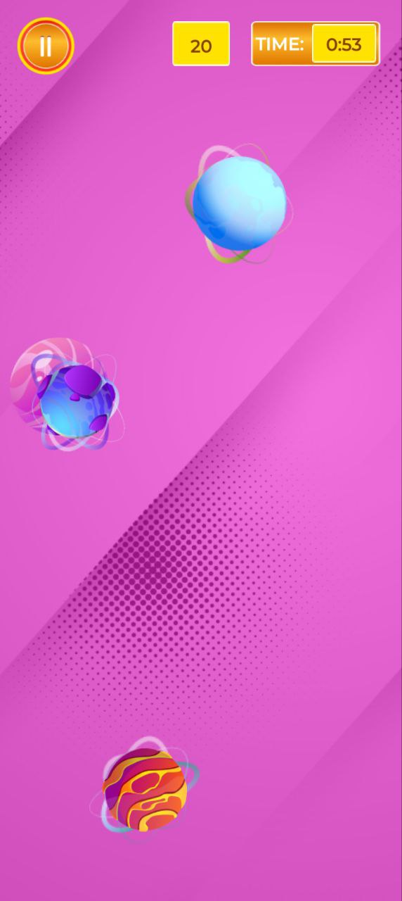
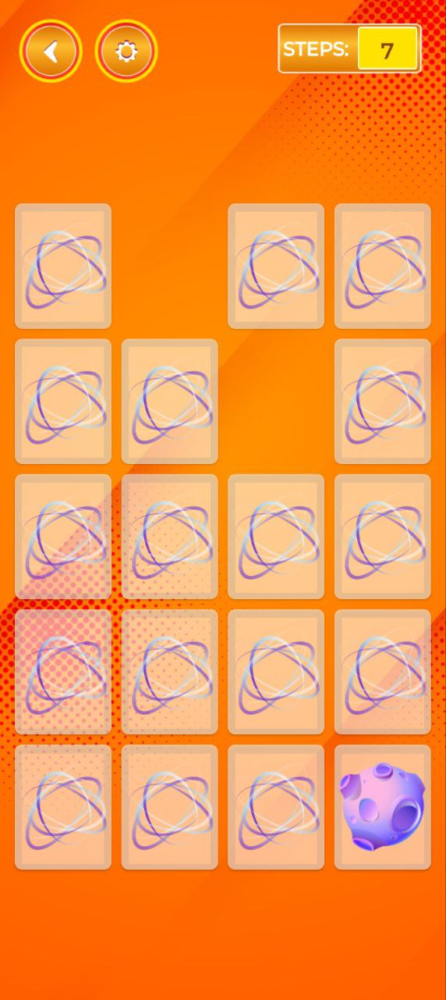
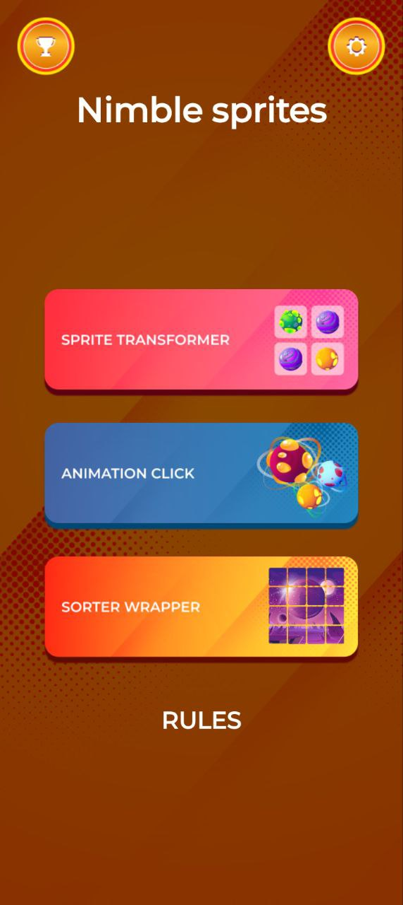
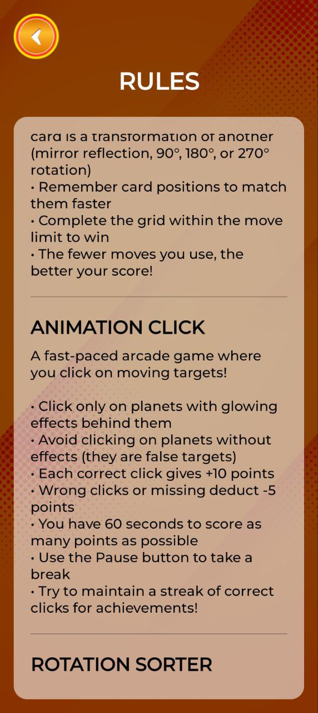
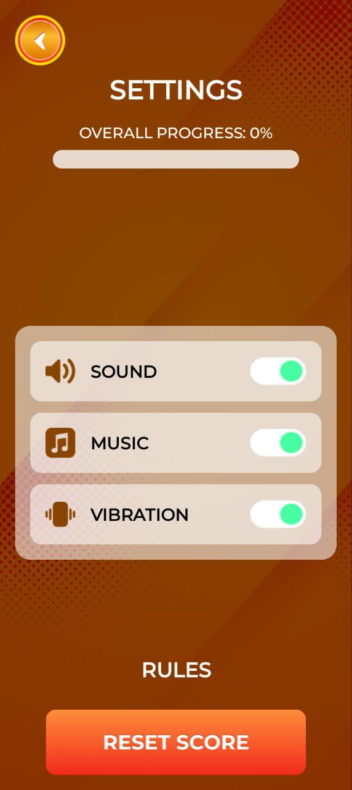
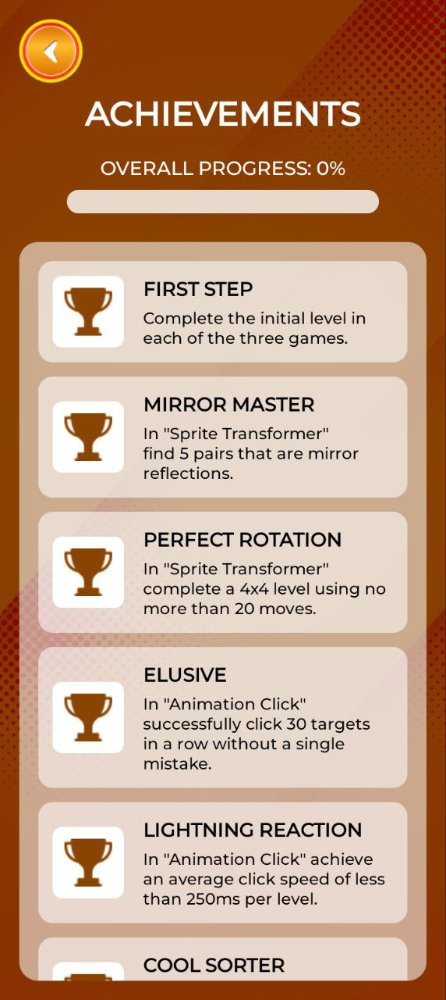
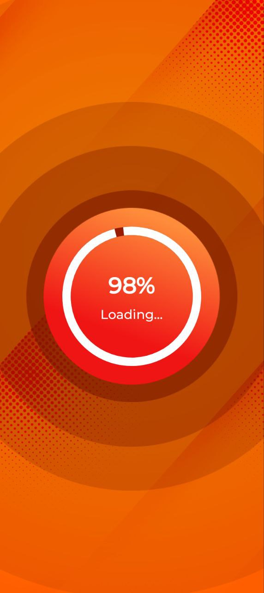
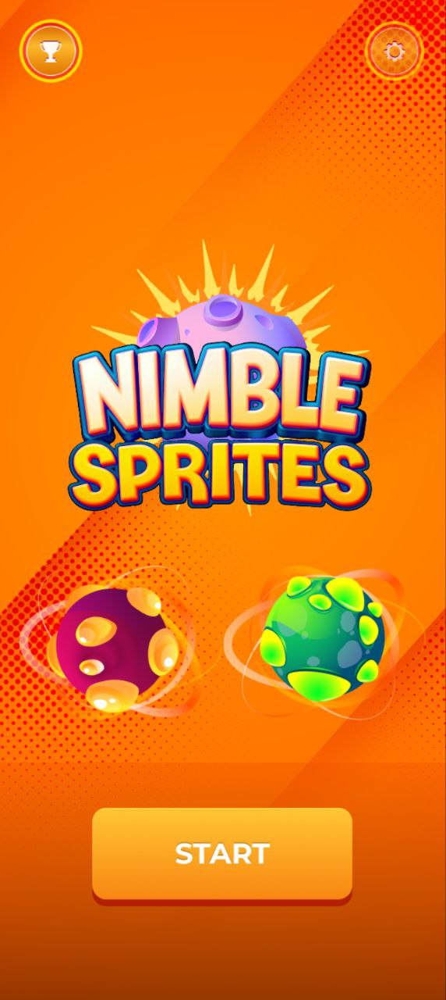
Огляд проєкту
«Спритні Спрайти» — це нативний Android-застосунок, що об’єднує три міні-гри в жанрах головоломки, реакції та логіки. Основний технічний акцент зроблено на реалізації плавних спрайтових анімацій без використання сторонніх ігрових рушіїв.
🧩 Спрайт-Трансформер
Memory-гра з 3D-переворотом карток. Вимагає пошуку пар, які пройшли трансформацію (обертання, дзеркало).
⚡ Анімаційний Клік
Аркада на швидкість реакції. Спрайти постійно рухаються та обертаються, використовуючи ViewPropertyAnimator.
🔄 Сортувальник Обертань
Логічна задача на складання візерунка через маніпуляції з матрицею станів об'єктів.
Технічні особливості
- Система досягнень: Створено модуль із 12 ачівок, що відслідковують прогрес, точність та швидкість гравця з візуальним фідбеком.
- Анімаційний двигун: Використання ObjectAnimator для забезпечення стабільних 60 FPS на нативних View-елементах.
- Збереження стану: SharedPreferences для миттєвого доступу до рекордів, налаштувань звуку та прогресу.
Результат
Проєкт успішно демонструє вміння працювати зі складними станами UI, кастомними анімаціями та архітектурою ігрової логіки в межах стандартного Android SDK. Це ідеальний приклад оптимізованого інтерактивного продукту.